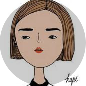
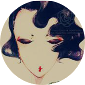
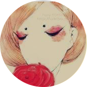
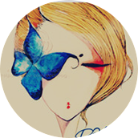

关注的人

只若初见
女
23岁
北京
大兴区
蛋炒饭饭炒蛋，两个鸡蛋一碗饭
0.01km
1分钟
取消关注

唯见初心
女
22岁
北京
丰台区
土豆爱上回锅肉
0.05km
2分钟
取消关注

宁静致远
女
24岁
北京
石景山区
柠檬与黄鳝的碰撞，你敢想象
1.02km
3分钟
取消关注

上善若水
女
22岁
北京
门头沟区
不会做饭的医生不是好设计师
1.03km
3分钟
取消关注
影随风
男
25岁
北京
大兴区
谁动了我的窝头
0.01km
5分钟
取消关注